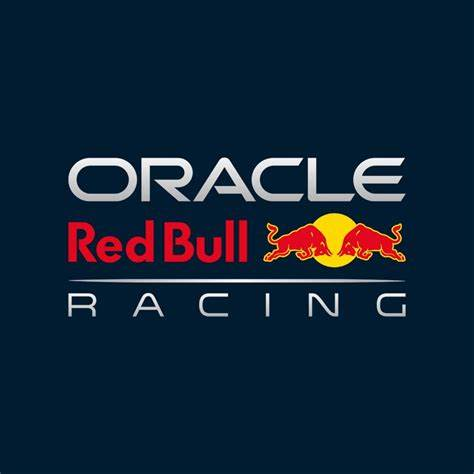

Lando Norris

Oscar Piastri
The reigning and defending Constructors' champions, having secured their first team title since 1998 in 2024,
now poised for even more silverware in 2025.

Carlos Sainz
A team with a celebrated history of success but a challenging recent period, now showing encouraging signs of
revival under the leadership of James Vowles and the addition of Carlos Sainz.

Charles Leclerc
Lewis Hamilton
"Fred Vasseur's Ferrari revolution gains momentum with the blockbuster signing of Lewis Hamilton from Mercedes,
forming a formidable driver lineup alongside Charles Leclerc or behind

Lance Stroll
Fernando Alonso
Mercedes embarks on a new era following Lewis Hamilton's move to Ferrari. Will Kimi Antonelli emerge as
their answer to Max Verstappen?

Red Bull
Milton Keynes, UK

Max Verstappen

Yuki Tsunoda
While no longer the dominant powerhouse they once were, the team still boasts immense star power with
Christian Horner leading the charge and the formidable Max Verstappen behind the wheel.